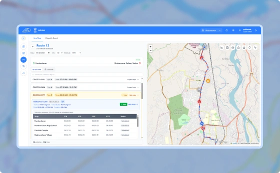
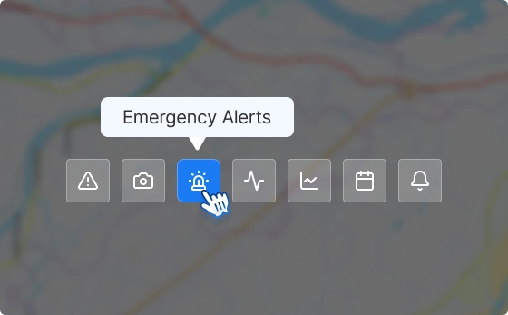
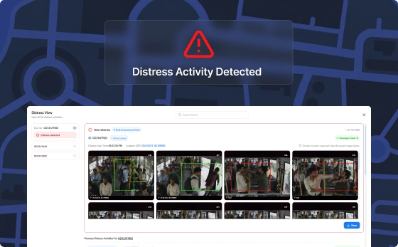

Track every vehicle in real time and keep passengers informed with accurate, live location data.

Track buses and routes live across the entire network.

Surface critical events and guide teams to the right action.

Track safety-related signals and review activity history per bus.
See how PUBBS Transit brings planning, scheduling, dispatch, fleet management, and passenger services together in one connected platform.
Book a Demo